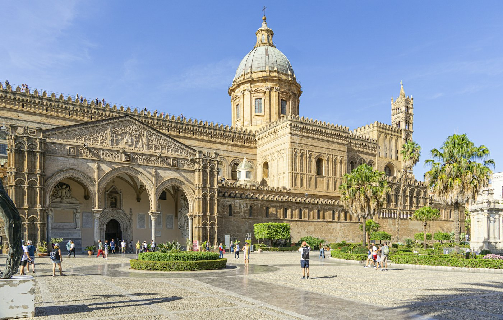
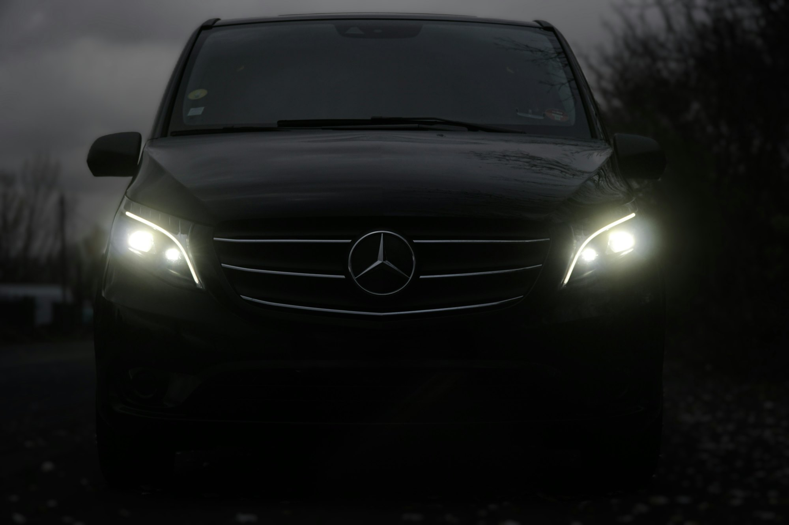
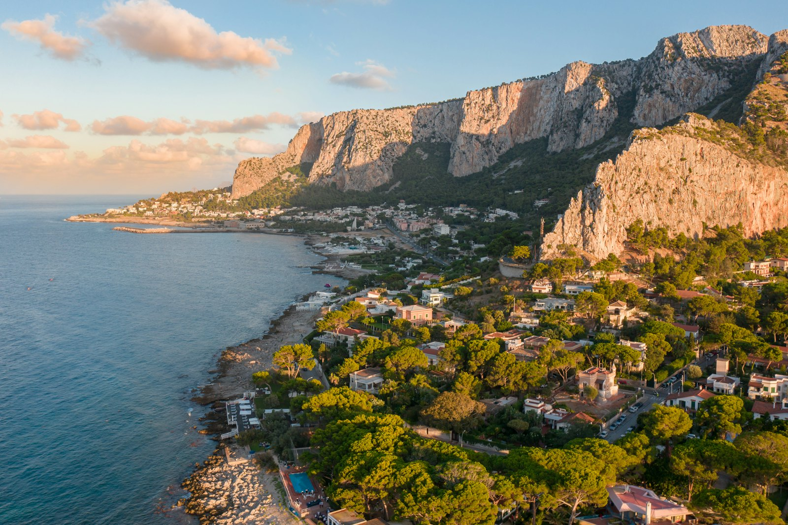
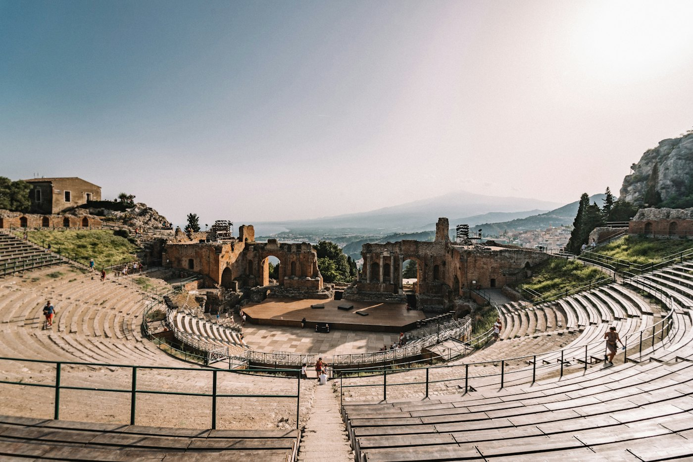
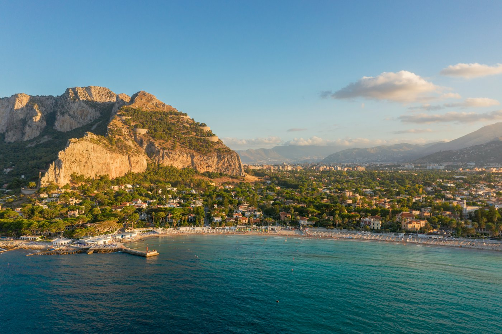

Palermo e Monreale
La Cattedrale, la Cappella Palatina, poi su a Monreale per i mosaici d'oro del Duomo.
Mezza giornata, 10 km
Noleggio con conducente a Palermo. Vi aspettiamo agli arrivi con il vostro nome sul cartello; se il volo ritarda, lo sappiamo prima di voi.
Toccate un punto sulla carta: vedete chilometri e tempo, e il messaggio per chiedere il prezzo fisso è già scritto.

La Cattedrale, la Cappella Palatina, poi su a Monreale per i mosaici d'oro del Duomo.
Mezza giornata, 10 km
Il golfo visto dall'alto, poi la spiaggia dei palermitani e un'arancina sul lungomare.
Mezza giornata, 12 km
Il Duomo normanno, i vicoli e il lungomare. Al ritorno ci si ferma dove la costa è più bella.
Una giornata, 70 km
Il tempio dorico tra le colline, poi il borgo di pietra sopra Trapani e le saline.
Una giornata, 100 km
Il Teatro Antico con l'Etna di fronte e Isola Bella dall'alto. Si parte all'alba.
Giornata lunga, 260 kmFino a tre passeggeri con tre valigie grandi. Per i transfer e le giornate di lavoro.
Fino a otto passeggeri. Famiglie, gruppi, sposi con gli ospiti; c'è posto per passeggini e sacche da golf.
Nel sito vero qui ci sono le foto delle vostre auto, i modelli e il numero di licenza.

Rispondiamo con il prezzo, l'ora in cui vi aspettiamo e il nome dell'autista.
Scrivici su WhatsApp